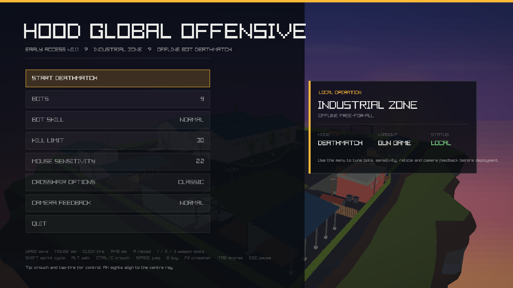
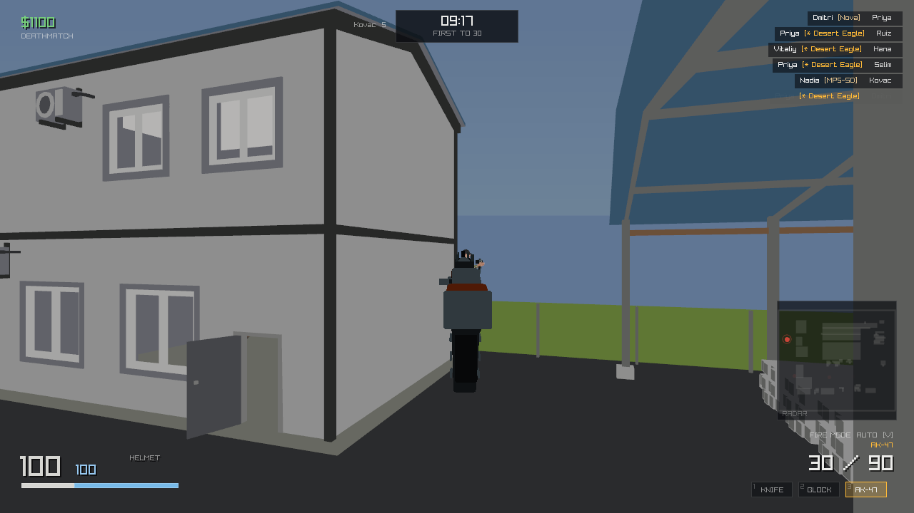
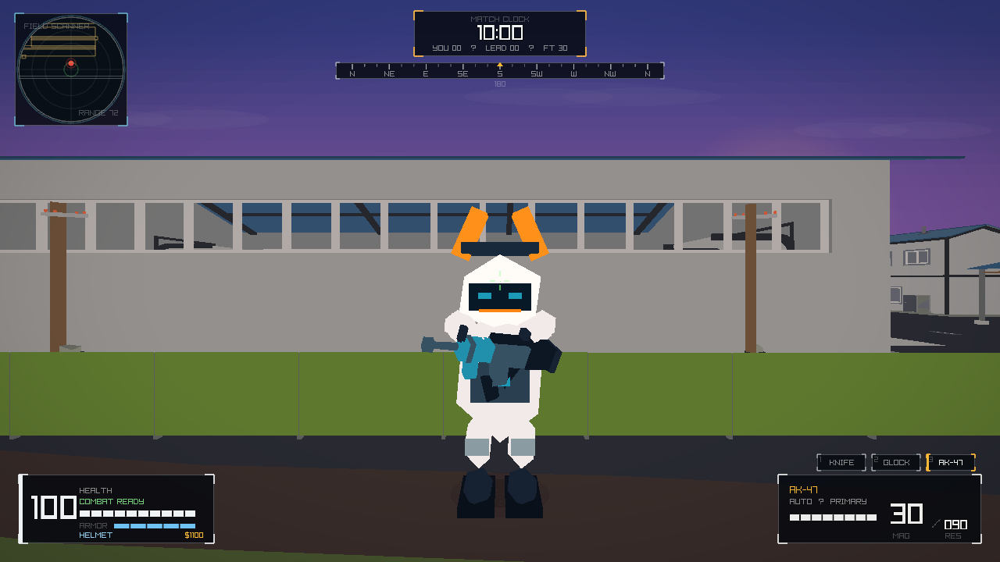
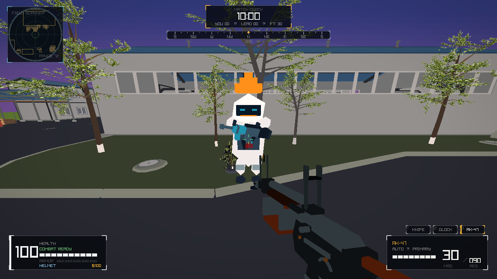
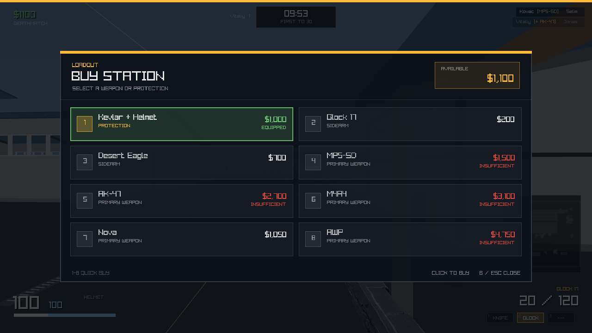

Unreleased 0.1.1 worktree · a Counter-Strike style deathmatch FPS in C# on Raylib-cs · map: Industrial Zone
Every frame below is rendered by the real game. Capture a frame with dotnet run -- --screenshot <file>, then check the curated set with python tools/verify_shots.py.

Sunset arena main menu. Bot count, bot skill, kill limit and mouse sensitivity are all set here before you start.

AK-47 iron sights. Hold right mouse to aim through the model's own rear U-notch and front post; this visual pose preserves the same authoritative centre ray used for hits.Low Poly Industrial Zone. The owner-supplied GLB is the visible arena. Its pavement, collision plane and spawn anchors are aligned rather than layered over procedural props.

Capsule combatant. The current structured low-poly enemy is a rounded capsule character with a compact carbine, readable silhouette variants and locomotion states, while the player's Gun Game view-model path stays independent.

Combat feedback. The native presentation combines camera-safe hit confirmation, impact mist, droplets and short-lived surface splats without replacing the simulation hit path.

Buy Station (B). The live-match overlay has large selectable purchase cards, affordability feedback, quick-buy keys and a B-key handoff that cannot close the menu on its opening press.
These captures are produced by running real matches and rendering a single frame, so nothing here is a mock-up. The iron-sight frame in particular waits until ADS is at least 97% raised before capturing.